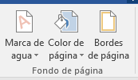
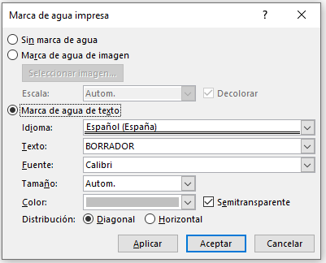
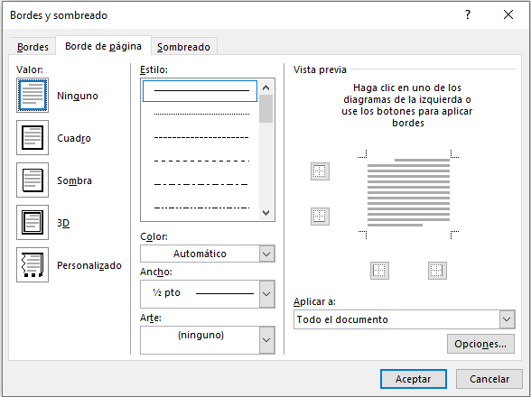

Por defecto las páginas se muestran blancas, pero podemos cambiar el fondo de las páginas.

Encontraremos tres herramientas que nos permitirán cambiar el fondo de todas las páginas a la vez:
Marca de agua. Normalmente es un texto que se ve al fondo de la página. Al hacer clic se desplegará un menú que te permitirá elegir del listado. Para quitar la marca de agua de un documento deberán pulsar la opción Quitar marca de agua. Si lo que quieren es personalizarla ya que ningún texto predefinido se adapta a sus necesidades o desean que sea una imagen, deberán seleccionar Marcas de agua personalizadas. Ahí tendremos, además, la posibilidad de establecer algunas características del texto.

Color de página. En esta herramienta les permite escoger un color en una paleta de colores. Así como el efecto para indicar qué grado de claridad o oscuridad aplicar de ese mismo tono para generar el contraste del degradado.
Bordes de página. Para aplicar el borde es ir escogiendo las opciones de izquierda a derecha.
- Primero seleccionar el valor para el borde: Ninguno, Cuadro, Sombra, 3D o Personalizado. El tipo seleccionado es el que estará enmarcado en azul.
- Posteriormente, seleccionar el estilo de línea que quieren aplicar, donde podrán especificar su color y ancho.
- Por último, elegir en la vista previa qué bordes desean aplicar. De forma predeterminada se muestran bordes en los cuatro lados, pero activando y desactivando los botones que hay a su lado podrán decidir cuáles bordes quieren mostrar. También podrán decidir su ámbito de aplicación: todo el documento, sólo la primera página, todas excepto la primera.
